THE CHARACTERS
Meet the people connected to the mysteries of Hawkins.
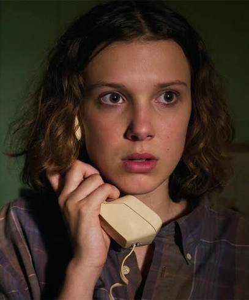
Eleven
A mysterious girl with extraordinary abilities and a complicated past.
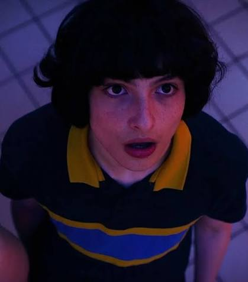
Mike Wheeler
A loyal friend who stands by the people he cares about.
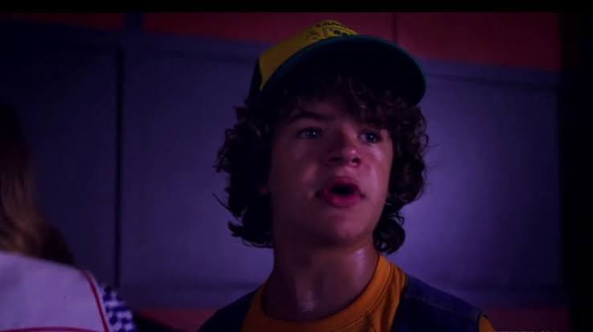
Dustin Henderson
A clever and curious member of the group who loves solving mysteries.
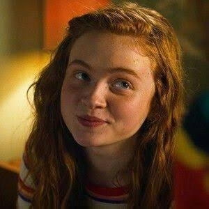
Max Mayfield
An independent and determined girl who isn't afraid to stand her ground.
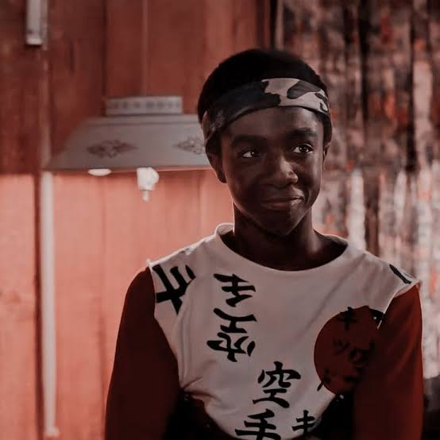
Lucas Sinclair
A brave and loyal friend who is always ready to protect his friends.
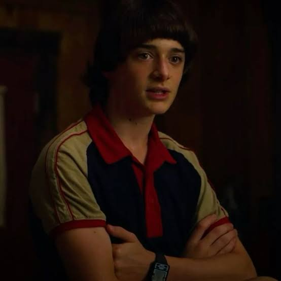
Will Byers
A sensitive and artistic boy whose connection to the Upside Down changes his life.
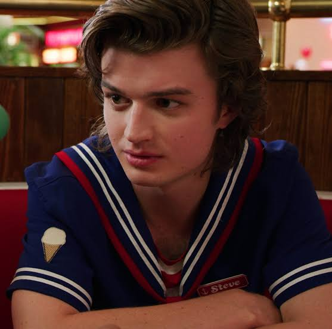
Steve Harrington
A courageous friend known for protecting the younger members of the group.
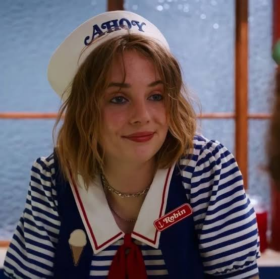
Robin Buckley
A witty and intelligent girl who helps uncover Hawkins' secrets.
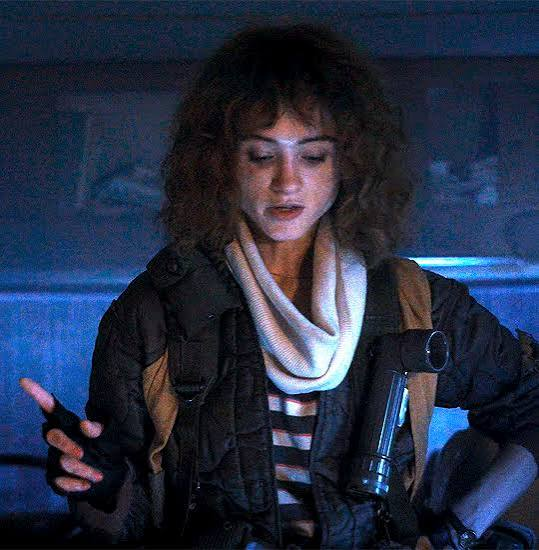
Nancy Wheeler
A determined investigator who refuses to stop searching for the truth.
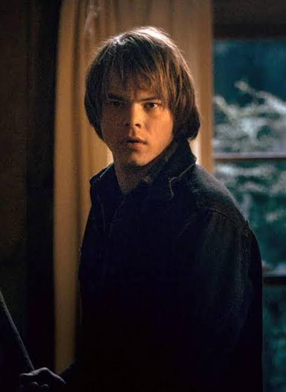
Jonathan Byers
A thoughtful photographer who deeply cares about his family.
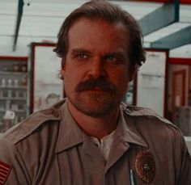
Jim Hopper
A tough police chief who risks everything to protect the people he loves.
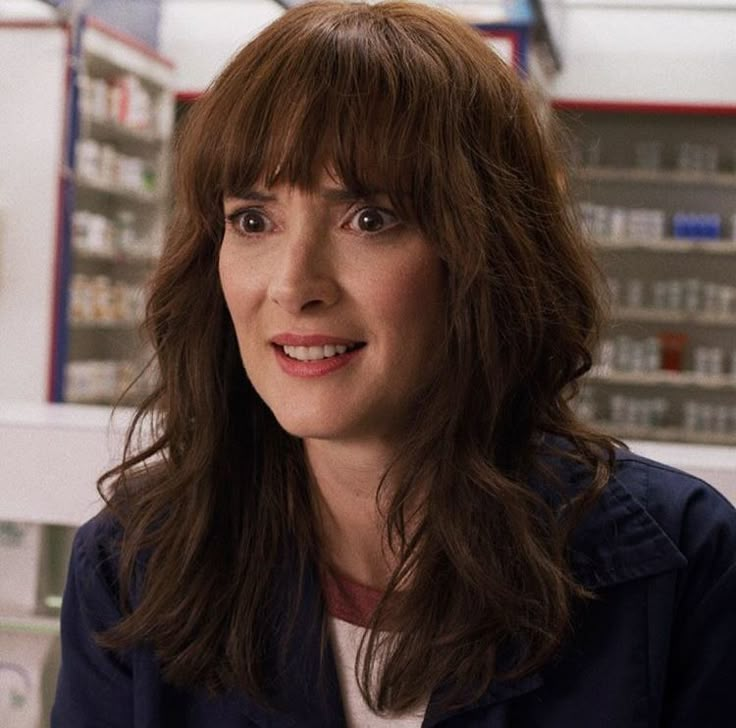
Joyce Byers
A fiercely devoted mother who will do anything to protect her family.

Murray Bauman
An unconventional investigator who suspects that something bigger is happening.
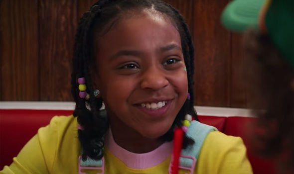
Erica Sinclair
A sharp-witted and confident girl who isn't afraid to speak her mind.
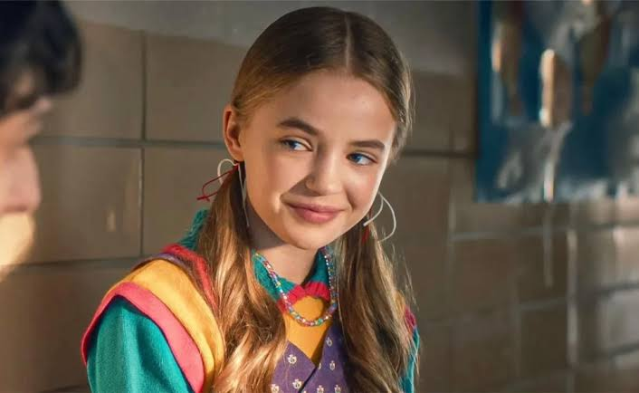
Holly Wheeler
A curious girl whose connection to the mysteries of Hawkins grows increasingly important.
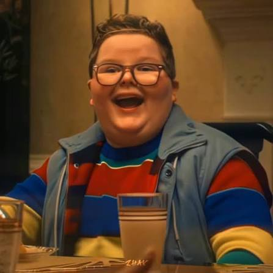
Derek Turnbow
A Hawkins kid caught up in the strange events surrounding the town.